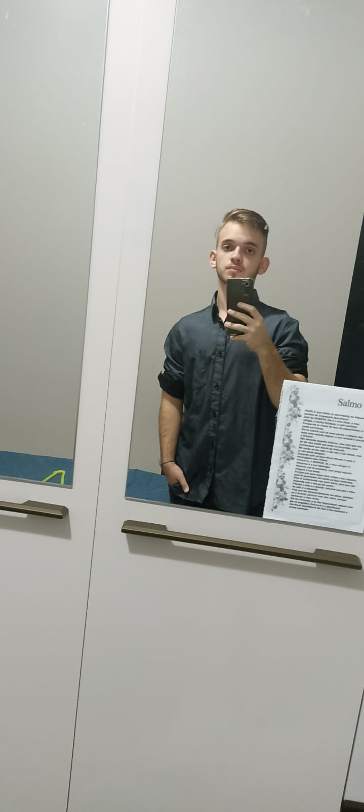

Bem-vindo ao meu portfólio!

Se estruturando neste meio tecnológico , terminando o segundo termo de Sistemas de informação, na qual até aqui aprendi muito sobre HTML5, CSS3, C, C++, R, PYTHON, Lógia de Programação.
Dentre outros assuntos como conhecimento em Hard-Skills e Soft-Skills.
Hoje atuo na parte administrativa da Prefeitura de Presidente Venceslau , como Estagiário, onde aprendi muito a lidar com o público e trabalhar cooperativamente em equipe, buscando sempre soluções efetivas com âmbito no sucesso e no acerto.
Administro meu tempo com o trabalho logo de manhã até o periodo da tarde , depois pratico academia e logo depois estudo , posteriormente me dirijo até a faculdade de Presidente Prudente , UNOESTE - FIPP, na qual tenho aulas das 19:00 até as 22:30 , depois retornando a cidade e repetindo o mesmo processo todos os dias por algo maior, o sucesso.
Projeto que estou desenvolvendo para meu pai, que trabalha com a área de meio ambiente e topografia. Veja mais
Projeto começado para testes, não terminado, por faltar a parte de banco de dados e por não ter dinheiro para investi-lo e talvez por ser meio ilegal. Veja mais
Projeto começado para testes, com uso de JavaScript. Veja mais
Você pode me contatar através dos seguintes meios: